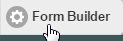
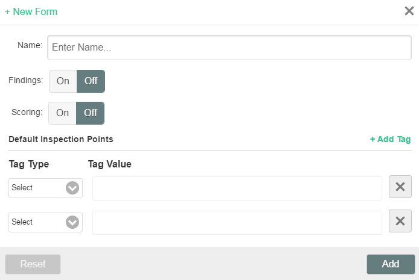
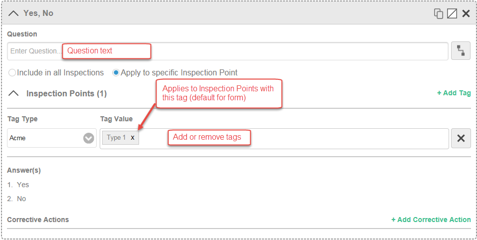
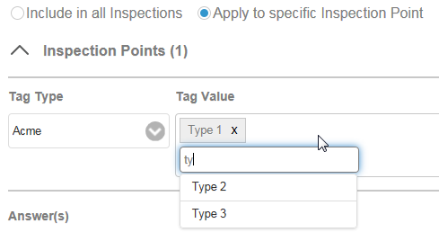
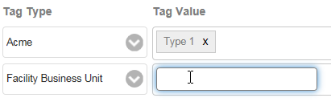
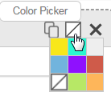

The Inspection Form Builder can be used to build a new inspection type with its associated questions, subquestions, findings and corrective actions.
You can add Tags to each question to specify which inspection points the question will apply to. (See Inspection and Question Applicability for more information on how tags are used.)
Forms are created in Draft status and will remain in that status until published. The form must be published in order to create inspections.
In order to create or edit inspection types with the Form Builder users will need the Manage Workflows right, plus at least Modify permissions on the facility that contains the library questions (zInspectionApp Question Library, by default).
To create a new Inspection Type:
Select the Form Builder button.

A list of existing inspection types is displayed.
You may copy an existing inspection, or create a new inspection type from scratch.
To create a new inspection type, select New Form.
Alternatively, to copy an existing inspection form, select Copy in the Actions column for an inspection form.
Click to turn on Findings and/or Scoring if you want to use these features.

If Findings is ON, then findings may be created for each question. Corrective actions may then be created for each finding.
If Findings is OFF, then corrective actions can be created directly for each question.
If Scoring is ON, you will be able to assign a weight to each question and a value to each answer, to be used in a total inspection score. See Inspection Scoring.
Optionally, select a Tag Type and Tag Values to apply as the default for new questions.
If you copied an existing inspection form, the Tags for questions in the original form are the same as in the original form.
Tag Types are the Tag Schemes available in the system. Tag Values are the Tags associated with the selected Tag Scheme. (The Tag Schemes and Tags must be previously defined in the Management System). See Library Question Configuration.
Click in the Tag Value box, then enter the first few characters of the tag to search for and select the tag. You can select multiple tags of the same tag type. To add another tag type, click +Add Tag, then select the tag type and tag(s).
To save the form, click Add.
The form will be saved in Draft status and opened for editing.
The question types are listed on the left side and include:
To add questions:
Drag the field type you want onto the form.
A new question field will be displayed in expanded view for editing.
In the Question field, enter the text of the question.
For a label field, enter the text to be displayed as read-only on the form.
For dropdown questions, add the Answers that will be displayed in the dropdown list.
Choose whether the question is a general question that applies to all inspection points or should apply only to specific inspection points.
Include in all Inspections: Question applies to all inspections of this type and will appear at the top of the form. For inspections with multiple inspection points, the question appears only once in the General section at the top of the form and is not repeated for each inspection point. General questions do not need inspection point-specific tags. (However, in current implementation they will require at least one of the inspection point tags.)
Apply to specific Inspection Point: If the question applies only to specific Inspection Points, choose this option, then add the tags that correspond to the Inspection Points to which it applies.

Inspection Points: To apply to specific Inspection Points, select the tag type and value that corresponds to the tag type-value applied to the Inspection Points.
Click in the Tag Value box, then enter the first few characters of the tag to search for and select the tag. You can select multiple tags of the same tag type.

To add a tag from a different tag scheme, click +Add Tag, then select the tag scheme and tag(s).

At least one object association must exist for a tag in order for the question to be saved.
Optionally, you can choose a color for the question by clicking the "color picker" icon.

Click Preview to save and preview your form at any time.
Click Save to save the form. The form will be saved in Draft status until you publish it.
You must publish a form before you can create a test inspection.
Once you have created an Inspection Form, you can edit as follows:
To publish a form, from the Inspection Types list, select Publish in the Actions column.
After the form has been published, you may create a test inspection.